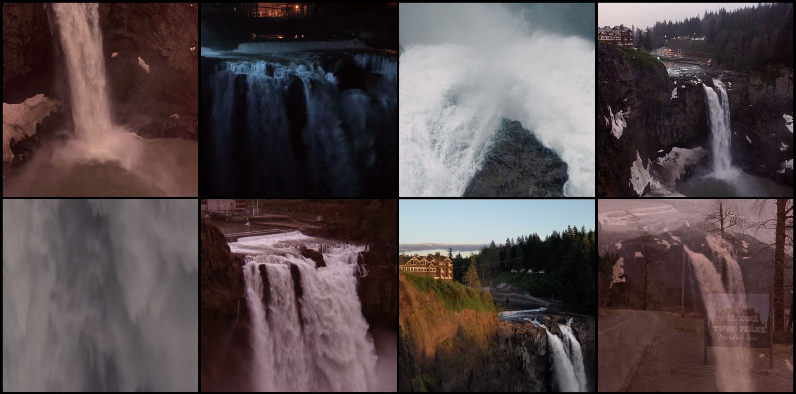

Laura Palmer al comienzo del misterio central de Twin Peaks
La historia comienza con el hallazgo del cuerpo de Laura Palmer, una joven muy conocida
en el pueblo de Twin Peaks. A partir de ese momento, el agente especial Dale Cooper llega
para investigar el caso junto con la policía local.
Mientras avanza la investigación, comienzan a salir a la luz secretos ocultos, conflictos
entre los personajes y sucesos extraños que transforman la serie en algo mucho más complejo
que un simple policial.
David Lynch, cocreador de la serie y principal responsable de su estilo visual.
David Lynch fue uno de los creadores de Twin Peaks y una de las figuras más importantes
en la identidad artística de la serie. Su estilo visual, cargado de simbolismo, misterio
y escenas inquietantes, fue clave para que la historia tuviera un tono diferente al de
otras producciones televisivas de su época. Gracias a su mirada creativa, Twin Peaks
logró combinar lo cotidiano con lo extraño y lo surrealista.
Su aporte no solo se nota en la dirección y en la estética, sino también en la manera
en que la serie construye tensión, emoción y desconcierto. Por eso, su nombre quedó
fuertemente asociado al carácter único e inolvidable de Twin Peaks.
Mark Frost, cocreador y una pieza clave en el desarrollo de la historia.
Mark Frost fue cocreador de Twin Peaks y tuvo un papel fundamental en la construcción
narrativa de la serie. Su trabajo ayudó a darle forma a la historia, al desarrollo de
los personajes y a la estructura del misterio central que impulsa la trama desde el inicio.
Su participación fue esencial para equilibrar los elementos policiales, dramáticos y
emocionales de la obra.
Junto con David Lynch, logró crear un universo complejo y atractivo, donde cada personaje
y cada situación aportan nuevas capas al relato. Su influencia se percibe especialmente
en la solidez del guion y en la manera en que Twin Peaks mantiene el interés a través
de sus conflictos y secretos.
Angelo Badalamenti, compositor de la inolvidable banda sonora de Twin Peaks.
Angelo Badalamenti fue el compositor de la música de Twin Peaks y su trabajo resultó
esencial para definir la atmósfera de la serie. El tema principal y el resto de la banda
sonora acompañan perfectamente el tono melancólico, misterioso e inquietante de la historia,
aportando una identidad sonora muy reconocible.
La música en Twin Peaks no funciona solo como acompañamiento, sino como una parte central
de la experiencia. Gracias a las composiciones de Badalamenti, muchas escenas adquieren una
carga emocional más profunda y una sensación de extrañeza que se volvió una marca registrada
de la serie.
Twin Peaks es un pequeño pueblo ficticio rodeado de bosques, montañas y caminos alejados.
A simple vista parece un lugar tranquilo, pero a medida que avanza la historia se revela
como un espacio lleno de secretos, conflictos y situaciones inquietantes. El pueblo no
funciona solamente como escenario, sino como una parte esencial de la identidad de la serie.
Sus calles, sus negocios, sus casas y sus habitantes construyen un universo muy particular,
donde lo cotidiano convive con lo extraño. Esta mezcla entre calma y oscuridad convierte
a Twin Peaks en uno de los elementos más recordados de toda la serie.
Los bosques que rodean Twin Peaks y refuerzan su atmósfera de misterio
Los bosques que rodean Twin Peaks son una de las locaciones más importantes de la serie.
La presencia constante de árboles, niebla, montañas y senderos vacíos genera una sensación
de aislamiento y misterio que acompaña toda la trama. La naturaleza tiene un papel central
en la ambientación y muchas veces transmite tanto belleza como amenaza.
Estos paisajes refuerzan la idea de que en Twin Peaks existe algo oculto detrás de la calma
aparente. Los bosques no son solo un fondo visual, sino un espacio ligado al peligro, al
secreto y a los aspectos más oscuros y sobrenaturales de la historia.
The Great Northern Hotel, uno de los lugares más emblemáticos del pueblo
El Great Northern Hotel es uno de los lugares más emblemáticos de la serie y representa
una parte importante de la identidad visual del pueblo. Su estilo elegante, sus interiores
de madera y su atmósfera silenciosa lo convierten en un espacio que transmite al mismo
tiempo comodidad, misterio y cierta solemnidad.
Este hotel está asociado a varios personajes y situaciones relevantes dentro de la trama.
Además de funcionar como un escenario frecuente, ayuda a reforzar el tono particular de
Twin Peaks, donde incluso los espacios más refinados parecen guardar secretos.
El Double R Diner, punto de encuentro cotidiano en Twin Peaks
La cafetería Double R Diner es uno de los puntos de encuentro más reconocibles de Twin Peaks.
Es un lugar cotidiano dentro del pueblo, asociado a conversaciones, reuniones y momentos
aparentemente simples que contrastan con la tensión general de la historia.
Su ambiente cálido y familiar aporta una sensación de cercanía y rutina, pero al mismo tiempo
forma parte del extraño equilibrio que define a la serie. La cafetería se volvió una locación
muy recordada por los fanáticos y representa el costado más humano y cotidiano del pueblo.
La estación del sheriff, centro de la investigación en Twin Peaks
La estación del sheriff es una de las locaciones clave en el desarrollo de la investigación
por la muerte de Laura Palmer. Allí trabajan el sheriff Harry S. Truman y otros personajes
vinculados al caso, y también es el lugar donde Dale Cooper desarrolla buena parte de su tarea.
Este espacio representa el intento de encontrar orden y respuestas dentro de una historia llena
de misterio. Sin embargo, incluso en este entorno relacionado con la ley y la investigación,
la serie mantiene su clima extraño e incierto.
La casa de Laura Palmer, uno de los espacios más cargados de tensión de la serie
La casa de Laura Palmer es una de las locaciones más importantes desde el comienzo de la serie.
Allí se concentra gran parte de la carga emocional de la historia, ya que es el hogar de la
joven cuya muerte da inicio a toda la investigación.
Este espacio transmite dolor, tensión y secretos ocultos. A medida que avanza la trama, la casa
deja de ser solamente un escenario familiar y se transforma en un lugar asociado a conflictos
profundos, traumas y revelaciones fundamentales para comprender el universo de Twin Peaks.
El instituto de Twin Peaks, ligado a la vida juvenil del pueblo
El instituto de Twin Peaks representa el entorno juvenil de la serie y está directamente ligado
a varios de los personajes principales. Allí se cruzan amistades, relaciones, conflictos y parte
de la vida cotidiana del pueblo antes y después de la muerte de Laura Palmer.
Esta locación ayuda a mostrar que debajo de una apariencia normal y rutinaria también existen
tensiones, secretos y dobles vidas. Gracias a eso, el instituto aporta profundidad al retrato
social del pueblo y a la construcción de varios personajes importantes.
El Aserradero Packard, uno de los espacios industriales más importantes de Twin Peaks
El Aserradero Packard es una de las locaciones importantes de Twin Peaks y representa el costado
laboral e industrial del pueblo. Vinculado a la madera, los bosques y los negocios familiares,
este espacio muestra otra cara de la comunidad, más relacionada con los intereses económicos y
los conflictos de poder.
Su presencia en la serie refuerza la idea de que Twin Peaks es un lugar lleno de secretos detrás
de su apariencia tranquila. El aserradero no funciona solo como escenario, sino también como un
espacio ligado a tensiones familiares, misterios y situaciones peligrosas.
The Black Lodge, uno de los espacios sobrenaturales más enigmáticos de la serie
The Black Lodge es una de las locaciones más enigmáticas y recordadas de Twin Peaks. Se presenta
como un espacio sobrenatural que rompe con la lógica del mundo cotidiano y que está vinculado
a los aspectos más extraños, simbólicos e inquietantes de la serie.
Su estética particular, con cortinas rojas, suelo en zigzag y una atmósfera fuera de lo normal,
la convirtió en una imagen icónica dentro de la historia de la televisión. The Black Lodge
representa el lado más oscuro, surrealista y perturbador del universo de Twin Peaks.
El Roadhouse, espacio clave de la vida nocturna en Twin Peaks
El Roadhouse es uno de los espacios más representativos de la vida nocturna en Twin Peaks.
Funciona como un bar y escenario musical donde varios personajes se reúnen, conversan y
atraviesan momentos importantes de la historia. Aunque a simple vista parece un lugar de
encuentro y entretenimiento, muchas de las escenas que ocurren allí están cargadas de tensión,
emociones intensas y una sensación constante de misterio.
La música en vivo, la iluminación tenue y el ambiente cerrado le dan al Roadhouse una identidad
muy particular dentro de la serie. Este lugar ayuda a mostrar otro costado del pueblo, más
adulto,
más oscuro y emocional, y se convierte en una locación clave para reforzar la atmósfera
melancólica
e inquietante que caracteriza a Twin Peaks.
The One Eyed Jack's, uno de los lugares más turbios del universo Twin Peaks
The One Eyed Jack's es una de las locaciones más llamativas y turbias del universo de Twin
Peaks.
Se presenta como un casino y burdel ubicado cerca de la frontera, y está asociado a secretos,
excesos, manipulación y peligros ocultos. A diferencia de los espacios cotidianos del pueblo,
este lugar representa de manera más evidente el costado clandestino y corrupto que rodea a
varios
personajes de la serie.
Su estética elegante, provocadora y cargada de artificio contrasta con la tranquilidad aparente
de Twin Peaks, mostrando que detrás del misterio central también existe un mundo de dobles vidas
y negocios oscuros. The One Eyed Jack's amplía el universo de la serie y refuerza la idea de que
el mal y la corrupción no solo están en lo sobrenatural, sino también en los espacios más
humanos
y ocultos.
The Convenience Store, una de las locaciones más inquietantes y simbólicas de la serie
The Convenience Store es una de las locaciones más inquietantes dentro del universo de Twin
Peaks.
A diferencia de otros escenarios del pueblo, este lugar se vincula de manera más directa con lo
desconocido, lo perturbador y lo sobrenatural.
Su presencia aporta una sensación de amenaza y de extrañeza difícil de explicar. Aunque no es
una
locación cotidiana ni central en cantidad de apariciones como otras del pueblo, su peso
simbólico
es muy fuerte y refuerza la dimensión más oscura y misteriosa de la serie.
Una ambientación única

La combinación de espacios cotidianos y sobrenaturales define la ambientación de Twin
Peaks
Todas estas locaciones, tanto las cotidianas como las sobrenaturales, construyen una
ambientación
única e inolvidable. Twin Peaks logra combinar cafeterías, hoteles, casas, bosques y espacios
imposibles dentro de un mismo universo narrativo, creando una identidad visual muy marcada.
La ambientación no solo acompaña la historia, sino que la define. Gracias a sus escenarios,
colores, iluminación y clima constante de misterio, la serie consiguió un estilo propio que
todavía hoy sigue siendo una de sus características más admiradas.